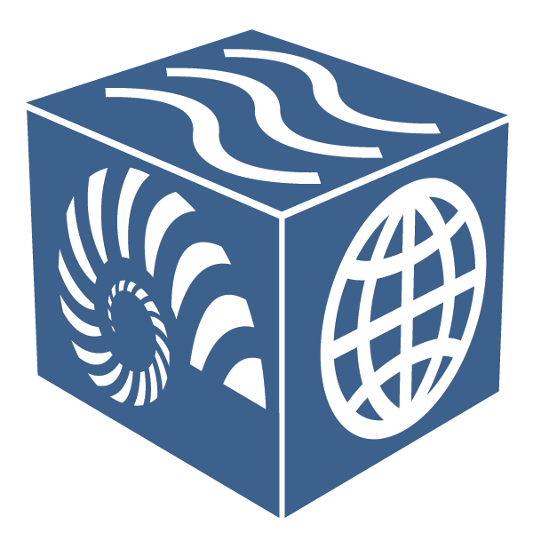
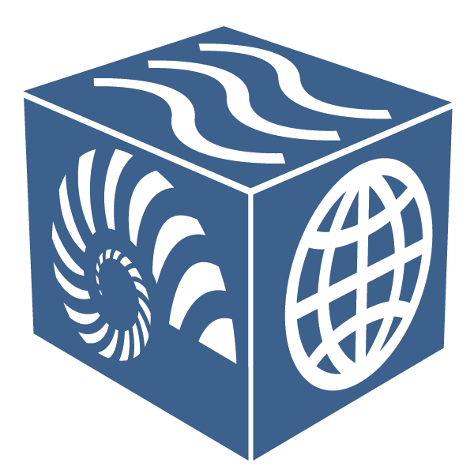

ELC: Introduction¶
The Earth-Life Consortium (ELC) seeks to make all paleobiological data easily discoverable, accessible, and analyzable, with the larger goal of understanding the interactions between the Earth’s biological and geophysical systems across all timescales of the Earth’s history.
Initial efforts are focusing on building a common search interface for paleobiological and paleoecological data stored in the Paleobiology Database and Neotoma Paleoecology Database. Other researchers and organizations interested in joining the Earth-Life Consortium are encouraged to contact the PIs listed on this page.
Overview¶
This project brings together six paleobiological databases so that they share a single set of Internet-based commands by which researchers and the public can easily access fossil records from all of Earth history. By coordinating with other emerging efforts in geological and biological data sharing, best practices, and protocols, we ensure that data will be freely available to all, enabling new scientific syntheses and discovery, more powerful educational opportunities, and general exploration of the history of life on Earth. This project establishes a Paleobiological Data Consortium, consisting of leaders of cyberinfrastructure resources in the paleobiosciences and allied disciplines, with the goal of sharing best practices and protocols among the geoinformatic and bioinformatic communities.
 
Support from NSF EarthCube ICER 1540997

Support from NSF EarthCube ICER 1540997Benefit to scientists¶
- Improve and expand the interoperability of CI within the paleobiosciences.
- Promote the sharing and use of paleobiological data within and outside the discipline but especially within closely allied geoscience and bioscience disciplines.
- Build interoperability between this paleobioscience CI and current and emergent CI in the biosciences, particularly with respect to networks of biodiversity and ecological databases.
- Establish a 4D framework for life and its physical environments.